<!doctype html>
<html lang="en">
<meta charset="utf-8">
<meta name="viewport" content="width=device-width, initial-scale=1">
<title>Eden Chang · Personal dossier</title>
<style>
  * { box-sizing: border-box; }
  body { margin: 0; background: #f6f8fa; }
  main { max-width: 780px; margin: 28px auto; padding: 24px; background: white; border: 1px solid #d1d9e0; border-radius: 6px; }
  img { display: block; width: 100%; max-width: 720px; height: auto; margin: auto; }
  @media (prefers-color-scheme: dark) { body { background: #010409; } main { background: #0d1117; border-color: #30363d; } }
  @media (max-width: 600px) { main { margin: 8px; padding: 8px; } }
</style>
<main>
  
</main>
</html>
